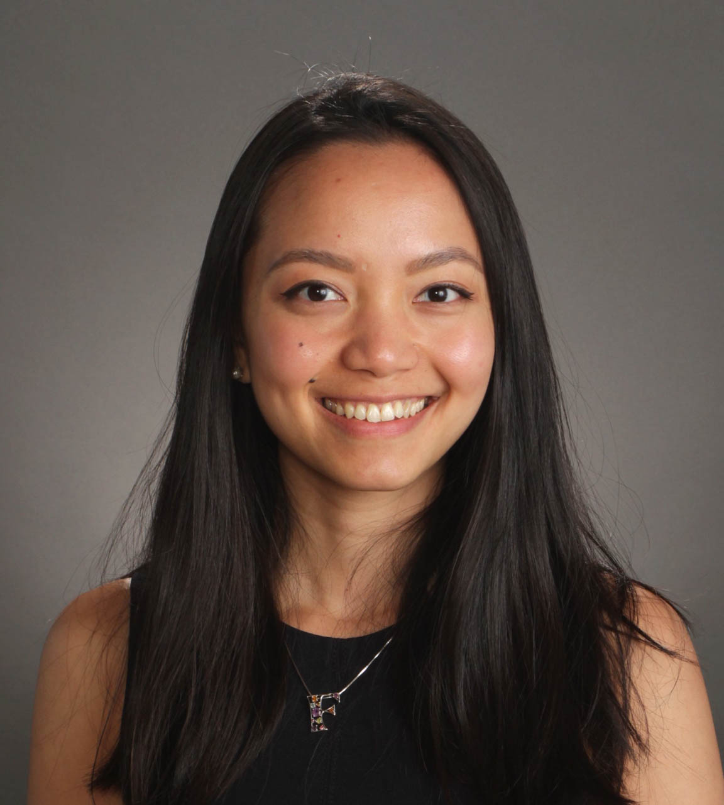

Ferrona Lie
Kellogg 1Y MBA '21
A current MBA candidate from the Kellogg School of Management 1Y program, I have 4 years of experience leading NeuroLux: a biotechnology startup developing and commercializing breakthrough technologies for neuroscience research with an emphasis on optogenetics as the company's Chief Operating Officer.
Key Achievements:
- Led six successful Small Business Innovation Research (SBIR) grants from the National Institutes of Health (NIH) with a total fund of ~$6.5M
- Managed cross-functional departments including a team of client relations, manufacturing, R&D, and purchasing to grow customer base by 8x>
- Analyzed company's financial statements to create better pricing strategies to increase profit margin by 30%
- Language: English, Indonesian, German
- Hobbies: Boxing, F1 Racing
